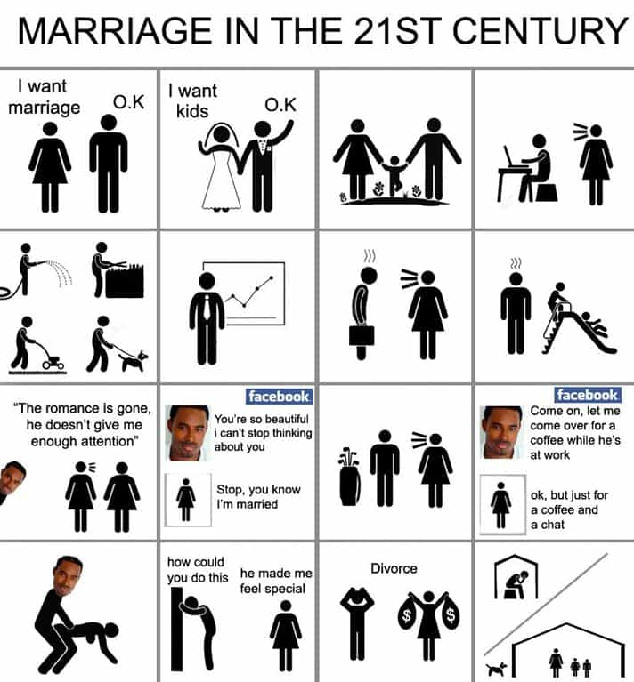

The latest fixation of feminists is “micro-cheating.” Their very loose and fast definition states that it is “a series of seemingly small actions that indicate a person [read: man] is emotionally or physically focused on someone outside their relationship.”

“Dating expert”
Micro-cheating is merely a watered-down version of the ridiculous #MeToo craze, an instrument that attempts to micro-police male behavior for the “benefit” of women, both real and made-up. Such a label is not one women will retrospectively apply to themselves, but certainly many of them will enforce it on men.
My colleague Ted Deveer wrote a recent article about the rate of women cheating now exceeding that of men. Whilst we can argue about the numbers and which gender does more of what, female infidelity has always been high enough to warrant concern. Yet there is a paucity of instances where women are regarded as moral actors when they cheat.
Do women ever take responsibility for full-fledged cheating?

The examples of them doing so are slim to none. I thought of that ditzy Twilight actress Kristen Stewart sheepishly half-apologizing after bonking her director behind Robert Pattinson’s back, but that’s basically it. In the celebrity world as much as the real life one, there is next to no shaming of women for outright sex with a man who isn’t their partner, let alone for so-called micro-cheating.
When I googled “apologizes for cheating,” almost all the hits were about men issuing a mea culpa, like the diminutive comedian Kevin Hart and rapper Jay-Z (in one of his albums). Of course, there’s the epic apology Tiger Woods “had to” make after plowing many female fields. Ironically, this did him no good anyway as he lost tens—if not hundreds of millions—of dollars after the news of his straying broke.
If a woman cheats, as many do, they have ready-made excuses that other women and white knights are allergic to calling out. “He was abusive,” “he didn’t give me enough attention,” “I felt lonely,” or “I didn’t mean it” are just some of the tropes women in relationships spout to evade responsibility after bedding another man. Alas, women’s defense of their micro-cheating is going to involve either the same sort of hamstering or full-blown denials. No amount of Cosmopolitan, Elle, or Huffington Post feature articles about this new fad can suddenly turn disloyal women into introspective paragons of virtue.
What we are left with is the near certainty that only men face being held to account for micro-cheating. When women “micro-cheat,” it essentially overlaps with shit-testing her current man or, if he’s absent, indulging in run-of-the-mill hypergamy. In the second category, a girlfriend or wife flirts with another man as she is trying to gauge whether his value is superior to that of her long-term mate. If someone can explain to me how micro-cheating will be used across the board to admonish both men and women, I’m all ears.
It’s related to #MeToo as well
For a start, laugh at it.
Shaming only men for cheating, applying micro-cheating to boyfriends and husbands alone, and dubious accusations of sexual impropriety—they’re all related. The commonality is that they seek to constrain, police, and embarrass males for their sexuality, reading immorality or even criminality into it, while pretending to do the same for women. Especially with #MeToo, a strong element of attention-seeking exists alongside the attempt to manipulate male actions in a relationship, sexual or otherwise.
Here’s the present range of ways women can try to control (and punish) men through sexuality:
Notice that none of these cases mentions any responsibility to be taken by a cheating woman whatsoever. In fact, they all perversely blame a man for any events (or imagined ones) that transpire.
Choo-choo goes the “victim” train
Here we are again, watching some new excuse for female hamstering and the fabrication of allegations of sexual malfeasance against men. Despite Western women being the safest and most pampered group of people on the planet (if you exclude the presence of the migrant rapists that feminists and other SJWs foisted upon our societies), they continue to find new and increasingly microscopic things to complain about.
To avoid triggering feminists, be sure not to engage any woman in a conversation or other interaction where you can be accused of micro-cheating on your wife or girlfriend. Remember, that’s emotional abuse, misogyny, and domestic violence!
Read More: Fact: Millennial Women Cheat More Than Millennial Men